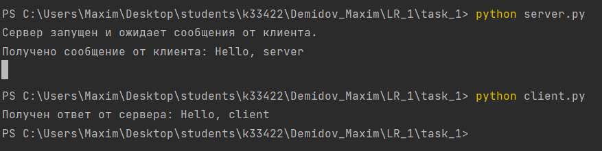
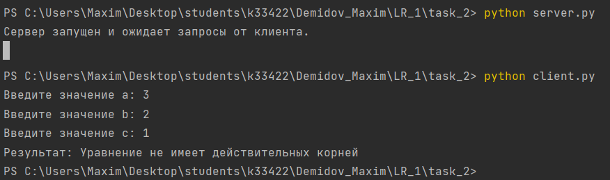
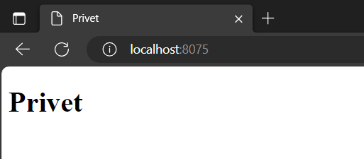
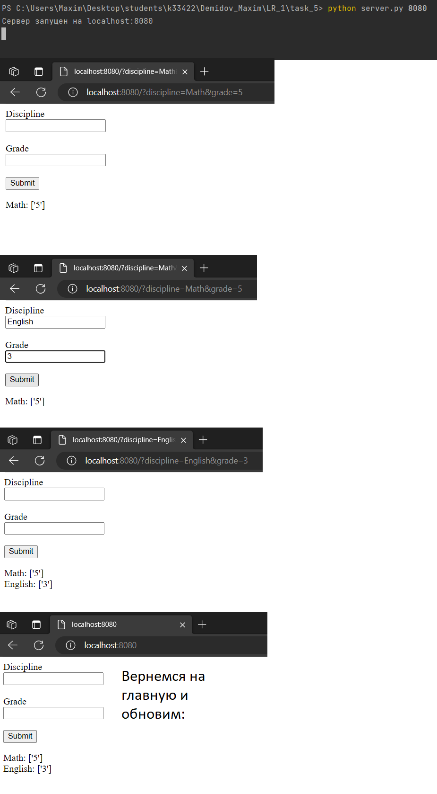

Задача №1
Реализовать клиентскую и серверную часть приложения. Клиент отсылает серверу сообщение “Hello, server”. Сообщение должно отразиться на сервере. Сервер в ответ отсылает клиенту сообщение «Hello, client». Сообщение должно отобразиться у клиента. Обязательно использовать библиотеку socket. Реализовать с использованием протокола UDP.
Решение
- Сервер
import socket
def main():
# Создаем сокет
server_socket = socket.socket(socket.AF_INET, socket.SOCK_DGRAM)
# Привязываем сокет к адресу и порту
server_address = ('localhost', 12345)
server_socket.bind(server_address)
print('Сервер запущен и ожидает сообщения от клиента.')
while True:
# Ждем получение сообщения от клиента
data, address = server_socket.recvfrom(1024)
# Декодируем полученные данные
message = data.decode('utf-8')
# Выводим полученное сообщение от клиента
print('Получено сообщение от клиента:', message)
# Отправляем ответное сообщение клиенту
response = 'Hello, client'
server_socket.sendto(response.encode('utf-8'), address)
if __name__ == '__main__':
main()
- Клиент
import socket
def main():
# Создаем сокет
client_socket = socket.socket(socket.AF_INET, socket.SOCK_DGRAM)
# Адрес и порт сервера
server_address = ('localhost', 12345)
# Отправляем сообщение серверу
message = 'Hello, server'
client_socket.sendto(message.encode('utf-8'), server_address)
# Ждем получение ответного сообщения от сервера
data, address = client_socket.recvfrom(1024)
# Декодируем полученные данные
response = data.decode('utf-8')
# Выводим полученное сообщение от сервера
print('Получен ответ от сервера:', response)
if __name__ == '__main__':
main()
Пример работы программы
Серверная и клиентская части
Задача №2
Реализовать клиентскую и серверную часть приложения. Клиент запрашивает у сервера выполнение математической операции, параметры которой вводятся с клавиатуры. Сервер обрабатывает полученные данные и возвращает результат клиенту.
Мой вариант, согласно списку группы, – решение квадратного уравнения.
Решение
- Сервер
import socket
import math
def solve_quadratic_equation(a, b, c):
# Решение квадратного уравнения
discriminant = b**2 - 4*a*c
if discriminant > 0:
x1 = (-b + math.sqrt(discriminant)) / (2*a)
x2 = (-b - math.sqrt(discriminant)) / (2*a)
return 'Корни уравнения: x1 = {:.2f}, x2 = {:.2f}'.format(x1, x2)
elif discriminant == 0:
x = -b / (2*a)
return 'Уравнение имеет один корень: x = {:.2f}'.format(x)
else:
return 'Уравнение не имеет действительных корней'
def main():
# Создаем сокет
server_socket = socket.socket(socket.AF_INET, socket.SOCK_DGRAM)
# Привязываем сокет к адресу и порту
server_address = ('localhost', 12345)
server_socket.bind(server_address)
print('Сервер запущен и ожидает запросы от клиента.')
while True:
# Ждем получение запроса от клиента
data, address = server_socket.recvfrom(1024)
# Декодируем полученные данные
params = data.decode('utf-8').split(',')
# Извлекаем параметры a, b, c
a = float(params[0])
b = float(params[1])
c = float(params[2])
# Вычисляем решение квадратного уравнения
result = solve_quadratic_equation(a, b, c)
# Отправляем результат клиенту
server_socket.sendto(result.encode('utf-8'), address)
if __name__ == '__main__':
main()
- Клиент
import socket
def main():
# Создаем сокет
client_socket = socket.socket(socket.AF_INET, socket.SOCK_DGRAM)
# Адрес и порт сервера
server_address = ('localhost', 12345)
# Вводим параметры a, b, c с клавиатуры
a = float(input('Введите значение a: '))
b = float(input('Введите значение b: '))
c = float(input('Введите значение c: '))
# Формируем запрос в виде строки "a,b,c"
request = '{},{},{}'.format(a, b, c)
# Отправляем запрос серверу
client_socket.sendto(request.encode('utf-8'), server_address)
# Ждем получение результата от сервера
data, address = client_socket.recvfrom(1024)
# Декодируем полученные данные
result = data.decode('utf-8')
# Выводим результат
print('Результат:', result)
if __name__ == '__main__':
main()
Пример работы программы
Серверная и клиентская части
Задача №3
Реализовать серверную часть приложения. Клиент подключается к серверу. В ответ клиент получает http-сообщение, содержащее html-страницу, которую сервер подгружает из файла index.html.
Решение
- Сервер
import socket
def handle_request(client_socket):
# Загрузка содержимого файла index.html
with open('index.html', 'r') as file:
content = file.read()
# Формирование HTTP-ответа
response = 'HTTP/1.1 200 OK\nContent-Type: text/html\n\n' + content
# Отправка ответа клиенту
client_socket.sendall(response.encode())
# Закрытие соединения
client_socket.close()
def run_server():
# Создание сокета
server_socket = socket.socket(socket.AF_INET, socket.SOCK_STREAM)
# Привязка сокета к адресу и порту
server_address = ('localhost', 8000)
server_socket.bind(server_address)
# Прослушивание подключений
server_socket.listen(1)
print('Сервер запущен на {}:{}'.format(*server_address))
while True:
# Ожидание подключения клиента
client_socket, client_address = server_socket.accept()
print('Получено подключение от {}:{}'.format(*client_address))
# Обработка запроса
handle_request(client_socket)
if __name__ == '__main__':
run_server()
Пример работы программы
При переходе по нужному сокету в браузере видим:
Задача №4
Реализовать двухпользовательский или многопользовательский чат. Реализация многопользовательского чата позволяет получить максимальное количество баллов.
Решение
- Сервер
import socket
import threading
def handle_client(client_socket, client_address):
# Обработчик подключения клиента
print(f"Новое подключение от {client_address}")
# Получаем имя пользователя от клиента
username = client_socket.recv(1024).decode()
print(f"{client_address} вошел в чат как {username}")
while True:
try:
# Принимаем сообщение от клиента
message = client_socket.recv(1024)
if not message:
break
message = message.decode()
print(f"Получено сообщение от {username}: {message}")
# Отправляем сообщение всем клиентам, кроме отправителя
for client in clients:
if client != client_socket:
client.sendall(message.encode())
except OSError:
break
client_socket.close()
print(f"Подключение с {client_address} закрыто")
def start_server():
host = 'localhost'
port = 9999
server_socket = socket.socket(socket.AF_INET, socket.SOCK_STREAM)
server_socket.bind((host, port))
server_socket.listen(5)
print(f"Сервер запущен на {host}:{port}")
while True:
client_socket, client_address = server_socket.accept()
# Создаем новый поток для каждого подключения клиента
client_thread = threading.Thread(target=handle_client, args=(client_socket, client_address))
client_thread.start()
clients.append(client_socket)
clients = [] # Список подключенных клиентов
start_server()
- Клиент
import socket
import threading
def receive_messages(client_socket):
# Функция для получения сообщений от сервера
while True:
try:
message = client_socket.recv(1024).decode()
print(message)
except OSError:
break
def send_message(client_socket, username):
# Функция для отправки сообщений на сервер
while True:
message = input()
full_message = f"{username}: {message}"
client_socket.send(full_message.encode())
def start_client():
host = 'localhost'
port = 9999
username = input("Введите ваше имя: ")
client_socket = socket.socket(socket.AF_INET, socket.SOCK_STREAM)
client_socket.connect((host, port))
# Отправляем имя пользователя серверу
client_socket.send(username.encode())
receive_thread = threading.Thread(target=receive_messages, args=(client_socket,))
receive_thread.start()
send_thread = threading.Thread(target=send_message, args=(client_socket, username))
send_thread.start()
start_client()
Пример работы программы
Запуск server.py и 3 пользователя:
Задание №5
Необходимо написать простой web-сервер для обработки GET и POST http запросов средствами Python и библиотеки socket.
Решение
- Web-server
import socket
import sys
grades = {} # Словарь для хранения оценок по дисциплинам
class MyHTTPServer:
def __init__(self, host, port):
self.host = host
self.port = port
def serve_forever(self):
# Создаем сокет сервера и слушаем входящие соединения
serv_sock = socket.socket(socket.AF_INET, socket.SOCK_STREAM)
try:
serv_sock.bind((self.host, self.port))
serv_sock.listen()
print(f"Сервер запущен на {self.host}:{self.port}")
while True:
# Принимаем новое соединение и обрабатываем его
conn, client_address = serv_sock.accept()
print(f"Подключен клиент с адресом: {client_address}")
try:
self.serve_client(conn)
except Exception as e:
print('Ошибка обработки клиента:', e)
finally:
serv_sock.close()
def serve_client(self, client):
try:
# Обрабатываем запрос клиента, формируем ответ и отправляем его
req = self.parse_request(client)
resp = self.handle_request(req)
self.send_response(client, resp)
except ConnectionResetError:
client = None
if client:
client.close()
def parse_request_line(self, rfile):
# Парсим первую строку запроса (строка запроса, метод, версия)
line = rfile.readline()
line = line.decode('utf-8')
return line.split()
def parse_request(self, conn):
# Парсим запрос клиента, извлекаем метод, путь и данные (если есть)
response_file = conn.makefile('rb')
method, target, ver = self.parse_request_line(response_file)
request = {'data': {}, 'method': method}
if '?' in target:
# Если в пути есть параметры, значит это POST-запрос
request['method'] = 'POST'
values = target.split('?')[1].split('&')
for value in values:
a, b = value.split('=')
request['data'][a] = b
return request
def handle_request(self, req):
if req['method'] == 'POST':
# Обрабатываем POST-запрос
return self.handle_post(req)
else:
# Обрабатываем GET-запрос
return self.handle_get()
def handle_get(self):
# Обрабатываем GET-запрос. Формируем тело ответа с веб-формой и списком оценок
content_type = 'text/html; charset=utf-8'
body = '<html><head><style></style></head><body>'
body += '<form>'
body += '<div><label for="discipline">Discipline</label><br>'
body += '<input type="text" id="discipline" name="discipline"></div><br>'
body += '<div><label for="grade">Grade</label><br>'
body += '<input type="text" id="grade" name="grade"></div><br>'
body += '<input type="submit" value="Submit"></form>'
for subject in grades:
# Добавляем оценки по дисциплинам в тело ответа
body += f'<div><span>{subject}: {grades[subject]}</span></div>'
body += '</body></html>'
body = body.encode('utf-8')
headers = [
('Content-Type', content_type),
('Content-Length', str(len(body)))
]
return Response(200, 'OK', headers, body)
def handle_post(self, request):
# Обрабатываем POST-запрос. Извлекаем данные (дисциплину и оценку) и сохраняем в словаре оценок
discipline = request['data']['discipline']
grade = request['data']['grade']
if discipline not in grades:
grades[discipline] = []
grades[discipline].append(grade)
return self.handle_get()
def send_response(self, conn, resp):
# Отправляем ответ клиенту
response_file = conn.makefile('wb')
status_line = f'HTTP/1.1 {resp.status} {resp.reason}\r\n'
response_file.write(status_line.encode('utf-8'))
if resp.headers:
for (key, value) in resp.headers:
header_line = f'{key}: {value}\r\n'
response_file.write(header_line.encode('utf-8'))
response_file.write(b'\r\n')
if resp.body:
response_file.write(resp.body)
response_file.flush()
response_file.close()
class Response:
def __init__(self, status, reason, headers=None, body=None):
# Конструктор класса Response, инициализирует атрибуты объекта
self.status = status # Статус ответа (например, 200 - OK)
self.reason = reason # Пояснение к статусу (например, "OK")
self.headers = headers # Заголовки ответа (словарь)
self.body = body # Тело ответа (строка или байтовые данные)
if __name__ == '__main__':
# Проверяем, были ли переданы аргументы командной строки
if len(sys.argv) > 1:
port = int(sys.argv[1]) # Получаем порт из аргументов командной строки
else:
port = 8000 # Если аргументы не переданы, используем порт по умолчанию (8000)
# Создаем экземпляр сервера MyHTTPServer, привязываем его к localhost и указываем порт
server = MyHTTPServer('localhost', port)
# Запускаем сервер и ожидаем запросов
server.serve_forever()
Пример работы программы
Запуск сервера и добавление предметов: